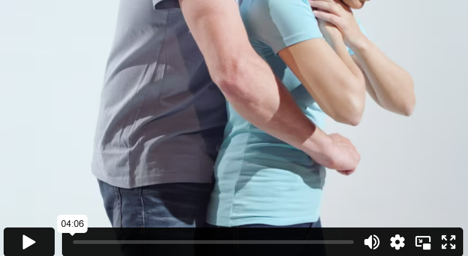

انسداد مجرى الهواء
كل يوم، يحدث أن يضع الناس شيئًا في حلقهم يعيق مجرى الهواء. إن الجسم العالق في مجرى الهواء يجعل التنفس صعبًا أو مستحيلًا. هذا الوضع يهدد الحياة، ومن المهم التصرف فورًا. إذا لم تكن متأكدًا، اسأل الشخص إذا كان قد ابتلع شيئًا عالقًا في حلقه. إذا كان الجسم صغيرًا ويمكنه أن يعيق جزءًا من مجرى الهواء، فاطلب من الشخص أن يسعل بقوة وبشكل متكرر وألا يتوقف حتى يخرج الجسم العالق.
كل يوم، يحدث أن يضع الناس شيئًا في حلقهم يعيق مجرى الهواء. إن الجسم العالق في مجرى الهواء يجعل التنفس صعبًا أو مستحيلًا. هذا الوضع يهدد الحياة، ومن المهم التصرف فورًا. إذا لم تكن متأكدًا، اسأل الشخص إذا كان قد ابتلع شيئًا عالقًا في حلقه. إذا كان الجسم صغيرًا ويمكنه أن يعيق جزءًا من مجرى الهواء، فاطلب من الشخص أن يسعل بقوة وبشكل متكرر وألا يتوقف حتى يخرج الجسم العالق.
- قم بثني الشخص إلى الأمام، وهذا سوف يجعل من الأسهل أداء السباحة على الظهر وكذلك من الأسهل أيضًا صعود الجسم.
- ضع إحدى يديك على عظمة القص لدى الشخص واليد الأخرى بين لوحي كتف الشخص.
- قم بتوجيه ما يصل إلى خمس ضربات قوية على الظهر باستخدام راحة يدك واضبط قوة الضربات على حجم جسم الشخص الذي تساعده.
إذا لم يكن الشخص قادرًا على السعال أو التحدث بسبب انسداد مجرى الهواء بشكل كامل، فالوضع طارئ ويجب أن تتدخل فورًا. ابدأ بإعطاء من 1 إلى 5 ضربات قوية على الظهر.
- قف بالقرب من ظهر الشخص وضع ذراعيك تحت ذراعيه.
- خذ يدك، ثم قم بطي إبهامك إلى الداخل وضغط قبضة يدك.
- ضع يدك فوق زر بطن الشخص مباشرة، مع توجيه جانب الإبهام نحو المعدة.
- ضع يدك الأخرى على قبضة يدك واضغط للداخل وللأعلى، حتى 5 مرات على التوالي.
استمر بالتناوب بين ضربات الظهر والضغطات على البطن حتى يتم إخراج الجسم العالق. إذا فقد الشخص وعيه، اتصل برقم 112 وابدأ الإنعاش القلبي الرئوي.
حتى إذا خرج الجسم العالق بمساعدة ضربات الظهر أو الضغطات على البطن أو الإنعاش القلبي الرئوي، قد تبقى أجزاء صغيرة منه في الرئة. لذلك، يجب دائمًا الاتصال بالطبيب لإجراء فحص لمجرى التنفس.